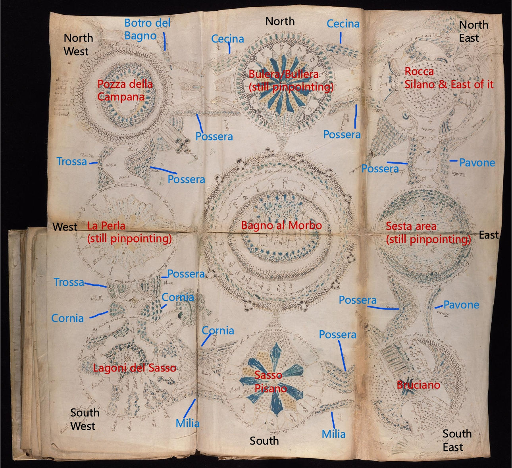
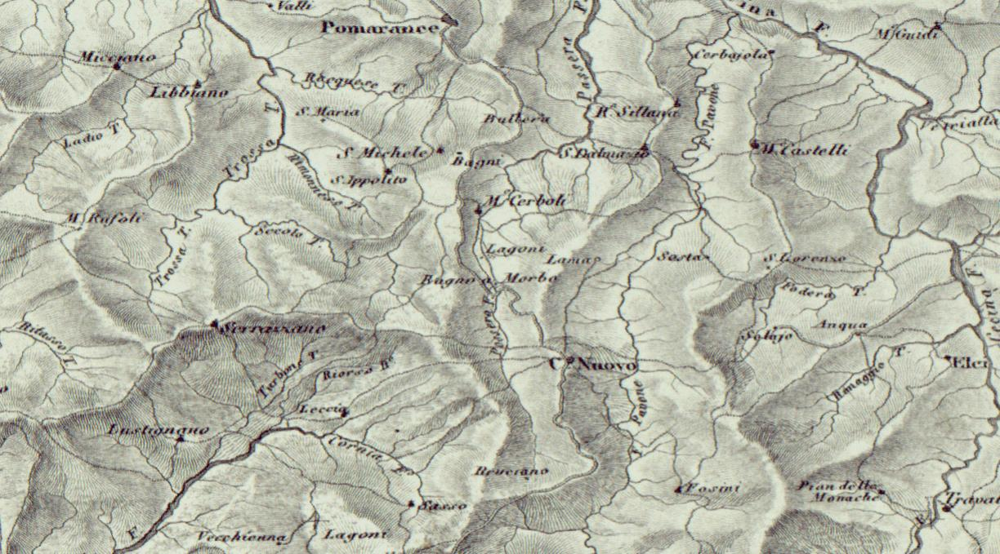

9 Radial Fully Mapped to Geothermal Area in Tuscany
Research is ongoing. A live interactive mapping project of the Tuscan geothermal region and corresponding 9 radial structures can be viewed here.


Research is ongoing. A live interactive mapping project of the Tuscan geothermal region and corresponding 9 radial structures can be viewed here.

